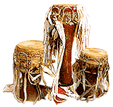
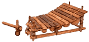
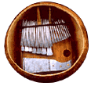

Mandinka drums: Сет из трех настроенных барабанов народности Mandinka, живущей в Сенегале и Гамбии.
Ритмы kutirindingo и kutiriba объединяются, чтобы создать опорный ритм, на фоне которого исполнитель на sabaro импровизирует соло. Музыка играет важную роль во многих аспектах жизни Mandinka, включая брак, церемонию присвоения имени, инициацию, полевые работы, спортивные игры и танцевальные вечеринки. Ритм частично меняется от деревни к деревне.
Соседние народности Firdu Fula и Jola исполняют на барабанах Mandinka свою собственную музыку. У Jola их используют исключительно на спортивных состязаниях.
Marovany: Цитра с глубоко-звучным корпусом из южной части Мадагаскара.
Masenqo: Эфиопская одно-струнная скрипка с украшенным алмазами звуковым корпусом, покрытым козьей шкурой.

Каждый барабан вырезан из ствола mahogany/красного дерева или манго и покрыт выбритой козьей кожей, которая крепится деревянными колышками. Барабаны настраиваются как ответ одного другому в зависимости от размера. Барабанщик играет одной рукой и короткой палочкой и носит браслет из железных колокольчиков (jawungo) на запястье. В семью входят(начиная с меньшего): kutirindingo (или belamentengo), kutiriba (или belengo), и sabaro. В Штатах, все три барабана называют одним словом kutiro.Ритмы kutirindingo и kutiriba объединяются, чтобы создать опорный ритм, на фоне которого исполнитель на sabaro импровизирует соло. Музыка играет важную роль во многих аспектах жизни Mandinka, включая брак, церемонию присвоения имени, инициацию, полевые работы, спортивные игры и танцевальные вечеринки. Ритм частично меняется от деревни к деревне.
Соседние народности Firdu Fula и Jola исполняют на барабанах Mandinka свою собственную музыку. У Jola их используют исключительно на спортивных состязаниях.
Marovany: Цитра с глубоко-звучным корпусом из южной части Мадагаскара.
Masenqo: Эфиопская одно-струнная скрипка с украшенным алмазами звуковым корпусом, покрытым козьей шкурой.
Maracas: Инструмент состоит из двух овальных резонаторов. Звук извлекают ритмичным потряхиванием. Широко используются на Карибах и с 60х во всем мире.
Marimba: 1) Пластиночный ударный инструмент, разновидность ксилофона.
2) Разновидность thumb-piano, распространенная в Конго и некоторых местностях восточной Африки.
Mbira: Thumb-piano зимбабвийской народности Shona. Во время игры инструмент закрепляют палочками mutsigo
Наиболее известная разновидность - Mbira DzaVadzimu(Mbira Духов Предков). У инструмента 22-28 ключей, размещенных на gwariva/звучащей дощечке из дерева mubvamaropa, и на нем играют двумя большими и указательным пальцем правой руки. Mbira использовалась для вызывания духов и общения с предками, сегодня это популярный музыкальный инструмент.
Marimba: 1) Пластиночный ударный инструмент, разновидность ксилофона.

Распространен среди народов Африки и Центральной Америки. Состоит из набора деревянных пластинок с тыквенными резонаторами под каждой из них.2) Разновидность thumb-piano, распространенная в Конго и некоторых местностях восточной Африки.
Mbira: Thumb-piano зимбабвийской народности Shona. Во время игры инструмент закрепляют палочками mutsigo

внутри большого выдолбленного gourd (deze). По краю deze протягивают бутылочные крышки или гальку, которые резонируют с похожим на шипение змеи жужжанием. Существуют инструменты с одним и тремя рядами пластин. Строй выбирает исполнитель, в ансамблях инструменты состраивают вместе.Наиболее известная разновидность - Mbira DzaVadzimu(Mbira Духов Предков). У инструмента 22-28 ключей, размещенных на gwariva/звучащей дощечке из дерева mubvamaropa, и на нем играют двумя большими и указательным пальцем правой руки. Mbira использовалась для вызывания духов и общения с предками, сегодня это популярный музыкальный инструмент.